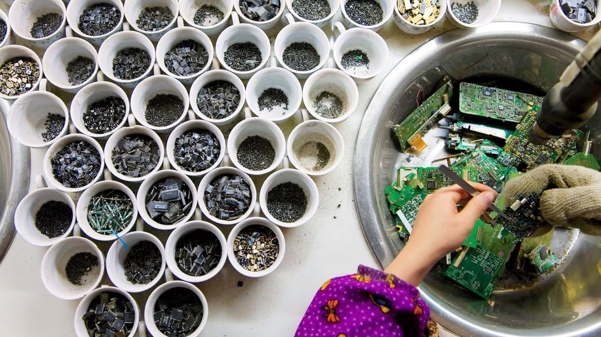
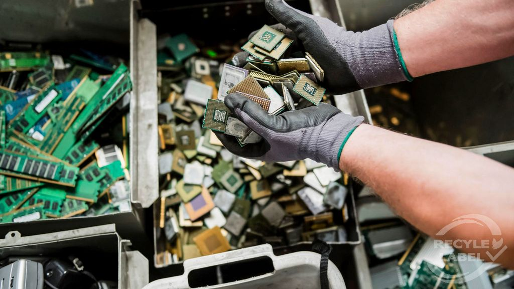
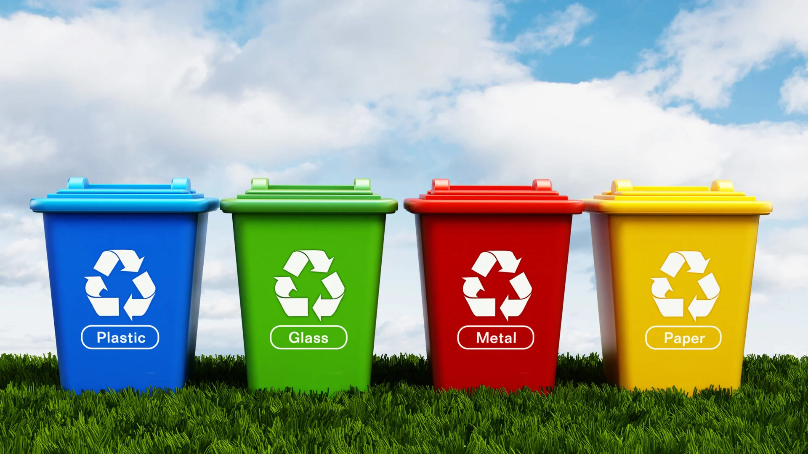
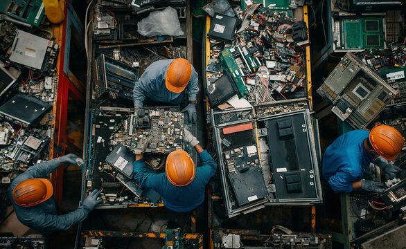

Circular Economy: The Basics
In a circular economy, waste is minimized and everything is seen as a resource. Products are designed to last longer, be repaired, or be recycled at the end of their life. This helps save natural resources, reduce pollution, and create new jobs.
According to the Ellen MacArthur Foundation, the circular economy is based on three main principles:
How Does It Work?
Design for Durability
Products are made to last longer and be easy to repair or upgrade, so we don't have to throw them away quickly.

Reuse and Share
Items are reused, shared, or refurbished instead of being discarded. Sharing platforms and second-hand markets are examples of this principle.

Recycle Materials
When products reach the end of their life, their materials are recycled and used to make new products, reducing the need for new raw materials.
Why Is the Circular Economy Important?

Save Resources
By keeping materials in use, we reduce the need to extract new resources from the Earth.

Reduce Pollution
Less waste means less pollution in our air, water, and soil.

Create Jobs
New business models, such as repair and recycling, create new job opportunities and support local economies.